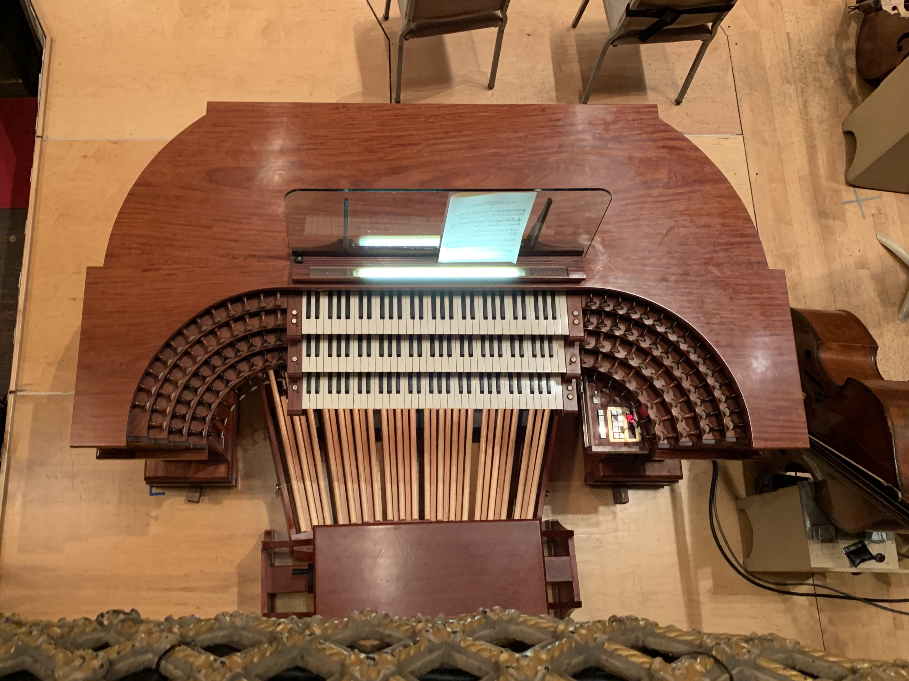
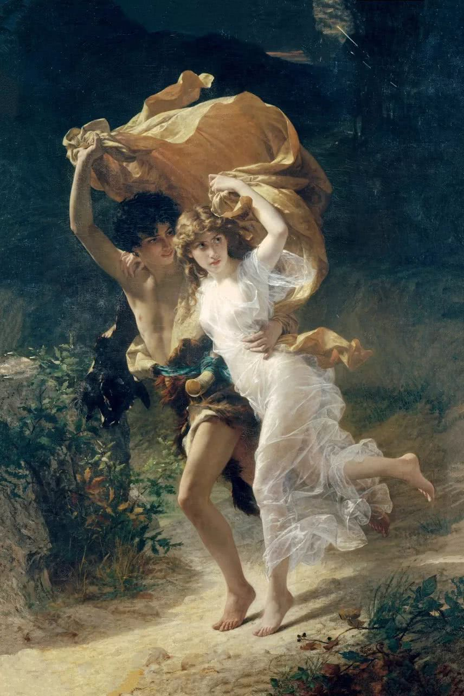

前几个月断断续续上了一下Yale的Listening to Classical Music这个课，其中课上安排了大家去听音乐会然后会写review的作业，觉得有点意思决定尝试一下。虽然写到一半我深刻地意识到我的review肯定不合格（我的理解是音乐会review应该是针对那一场演奏的，而不是作品本身，但作为新手的我修养还无法达到可以分辨出演奏版本的不同和好坏来），就当做是一个杂记看看便罢。
2019-01-14 Review
今天听的这场是all french program，由法国指挥家Alain Altinoglu带来，演奏的全是法国作曲家曲目：Debussy的Suite from “Pelleas et Melisande”，Poulec的Concerto in G minor for Organ, String Orchestra, and Timpani和Saint-Saens的Symphony No.3 in C minor “Organ Symphony”，organist是Thierry Escaich。
Debussy的”Pelleas et Melisande”从他的歌剧改编而来，指挥家亲自操刀进行改编。歌剧转变交响乐还是很有挑战的，因为歌剧中人声是最重要的部分。对于这首曲目我只能停留在感受印象派风格的层面，听的时候通感到印象派的画作：这里一点颜料（音符），那里一点颜料（音符），听到后面觉得有些许的无聊（我感觉我对德彪西的很多音乐都会觉得有些许的无聊）。
Poulec的organ concerto是我第一次现场听organ concerto。这一首曲子里没有woodwind部分（当然organ本身就是一个woodwind乐器），强大的organ充当了各种woodwind。这是第一次现场感受organ的音色多样性，很类似于电子琴雏形，既可以振聋发聩地咆哮也可以温和地充当弦乐团的背景。定音鼓在标题中被单独列出，notes中提到Poulenc “writes for the timpani as a fully chromatic instrument with a range of half an octave”，听下来的感觉定音鼓有点类似于“定心丸”，和organ一起更加营造出那种比较严肃的氛围。整个曲子停下来的感受是Bach+Starvinsky，既有非常Bach非常传统很harmonic的部分，也有Starvinsky的那种不和谐音，全部扑过来的感觉。
Saint-Saens的Symphony 3是这场喜欢的曲目。孤陋寡闻的我是第一次听这首作品，总体上是接受度比较高的一个作品（我的欣赏水平还是没有步入现代lol），和声大多都比较expected，乐团的演出张力非常强。虽然作品名含有organ，但organ不是主角，在最后的maestoso到来之前都和弦乐团融合的比较紧密。这首symphony比较特殊的地方是只有两个乐章（不过大多数录音是分成了四个乐章）。第一乐章开头弦乐快速跑动让人想起Smetana的Ma Vlast中From Bohemian Woods and Fields的开头。这段的memorable melody特别多，应接不暇。接下来进入非常优美的慢板，让人想到了Albinoni的Adagio in G Minor。也是因为现场演奏特别好，乐章间对比很明显，经过了allegro之后的听优美的adagio更觉得melancholy。
第二乐章小调的allegro黑暗系活泼，再加上定音鼓立刻从之前的melancholy情绪中拉出来这个乐章也很有意思，变化很多，中间有大调部分，还有chromatic scale的部分。管风琴振聋发聩的C major拉开了Maestoso的帷幕，几个大和弦先在弦乐团出现，底下还有钢琴的帮衬，然后管风琴和弦乐团一起“二重唱”，epic！splendid！sublime！而且这个chord progression本身也非常好听，重复时把最后一个G变成G#鸡皮疙瘩都起来了～接着的部分再次重述了之前乐章的很多主题，但有一些unstable，不过也显得coda更为华丽。第一次听完激动到跟邻座陌生老奶奶都忍不住交流表达喜爱之情～
听完这场音乐会最大的体会就是现场不可复现的特性带来的魅力，用一个有些俗的说法就是“一期一会”。之后几天我都在复习Symphony No.3，听的是BSO 93年Munch的版本，也非常好听，但是无论如何都再也无法重温当时现场的感觉。管风琴的音色在现场和录音中是非常不一样的（当然也可能是我没有好的播放设备），那种振聋发聩的音色充满整个大厅的感觉很难在录音中体会到。另外Debussy的那首由于是作曲家自己的编排，也无法再次回顾。写下这些文字也是想再抓住那转瞬即逝记忆的一次无力的尝试而已。
 BSO的管风琴
2019-01-17 Review
这一场是由BSO的assistant conductor Yu-An Chang指挥（他好像还挺厉害的）。曲目为Chi-Sun Lee的“Formosan Triptych”（是BSO commision），莫扎特的Piano Concerto No 2. in C和Tchaikovsky的Symphony No 3.
第一首的作曲家是一个台湾人，欣赏水平还没有进入现代音乐的我对现代音乐的理解就是一堆打击乐怼一脸，不仅是有神奇的打击乐器，就连弦乐都被当打击乐器（弓敲琴弦一类）。这首也不例外，没有什么旋律，我也没听出什么所以然。
第二首是Mozart的Piano Concerto，就是Mozart的非常“方”的感觉，很甜美，很好听～这次也听到了他应用chromatic scale的部分，想到了上的课老师提到的哈哈哈。这次坐的位置看钢琴家看的比较清楚，专业钢琴家的clarity和stability真的是不能比啊。不过这首感觉并没有非常强调钢琴家的virtuosity。Notes中说这一首比起之前的piano concerto，”less operatic, and more symphonic”.
第三首是Tchaikovsky的Symphony No 3. ，之前没有听过，notes里也说这是least frequent played的一首。感觉这首symphony蛮有趣的，印象深刻的是第三乐章和第四乐章的部分很有魔法的感觉。第三乐章的旋律感觉特别像中土世界，脑中已然浮现出那种无人机拍摄大地的画面。而第四乐章很适合哈利波特，就像哈利第一次进入霍格沃茨城堡被无处不在的新鲜事物吸引，充满了好奇心。另外第一乐章里有一个主题的节奏型很特别。第二乐章是一个华尔兹，很优雅，想起天鹅湖和胡桃夹子。
也许是因为上一场太好了，总体下来感觉这一场显得有一些中规中矩。
2019-01-24 BSO review
这场是Andris Nelson从维也纳回来的第一场。BSO的商店都开始卖新年音乐会专辑了，效率真高。这一场第一首是Barber的Medea’s Meditation and Dance of Vengeance，第二首是Stravinsky的Chamber Symphony in E Minor，第三首是Dvorak的Symphony No.9 in E Minor, “From the New World”（新大陆交响曲）。
Barber的很现代，来自于一个芭蕾舞剧，讲的故事是脱胎于一个希腊神话美狄亚（Medea），Medea爱上并嫁给了了一个叫Jason的人，并帮助他夺去了『金羊毛』，还生育了两个儿子。结果后来丈夫移情别恋，抛弃弃子，美狄亚黑化，最终杀掉了第三者和自己的两个儿子的故事。曲子的情绪变化也基本符合这个故事，开头很温暖，notes上说是展现美狄亚对自己孩子的爱，而后情绪越来越激烈（节奏也越来越快），在仇恨矛盾不甘中逐渐黑化，让人想到了Virginia Woolf的意识流。记忆比较深的是中后部分钢琴开始出现一个挺“爵士”的bassline，这之后就越加疯狂，感觉舞台上都喷出火了，席卷一切。over-inter
第二首是Starvinsky的，听完之后和我妈交流，我们居然都不约而同的想到了现在的肺炎疫情。第一乐章很悲伤，感觉在哀悼；第二乐章无比愤怒；第三乐章是个很有趣的华尔兹，听起来有点讽刺，不是那种歌舞升平的施特劳斯式华尔兹。第四乐章情感比较丰富，生气，抗议，哀悼，回忆过去美好时光全部交织在一起。而第五乐章再次回归哀悼的挽歌。后来读了notes才知道了这首曲子的背景，他最开始说这首曲子是为了纪念法西斯战争里的受害者，结果多年后在通信中发现，这首曲子是他写给他自己的，其中最有趣的是把他的名字藏在其中：他的名字开头D.Sch被变成了D-Eflat-C-B,是整个曲子中最常见的主题。如果在听之前看了这个notes，怕是又会有不同的联想吧。
第三首是熟悉的新大陆。当年第一次听BSO就是听新大陆交响曲，『故乐重听』总是让人期待。新大陆就是一首从头到尾随便抓一个地方都是好听旋律或者和声的曲子。作为一首比较熟悉的曲目，这场的BSO似乎在第二乐章的处理上比较不一样，感觉速度慢一些，但更自由一些，指挥的手各种绕绕绕绕绕的哈哈哈。在看notes之前我对新大陆的理解一直都是『远渡重洋来美国开启新生活的故事』，结果看了notes才发现理解完全不对，作曲家的助手提到这首曲子就是”Impressions and greetings from the new world”, 都不一定是指America！Notes中还提到”The title that Dvorak append to the symphony has also been heavily interpreted, probably over-interpreted, in discussions of the work’s national character”。不过notes里也提到了这首歌有很多『美国』元素，主要是黑人和原住民的元素。第二乐章里耳熟能详的旋律（后来被改成了Goin’ Home和小学音乐课本学的《念故乡》）其实脱胎于The Song of Hiawatha（一首关于美国原住民的长诗）中的葬礼部分，而第三乐章是这首长诗的婚礼部分。曲子中非常常见的五声音阶也被认为是取材于黑人和原住民的音乐(此处附上一篇1992年分析此曲的论文Henry Krehbiel, Antonín Dvořák, and the Symphony “From the New World” on JSTOR，其中还包含了1893年的分析的reprint）。
这场的曲目都蛮喜欢的，以及体会到了在不同的心境和信息的情况下听曲目会带来不同的联想，这一点和欣赏绘画、雕塑等有点类似。
2019-01-30 Review
这一场本来是BSO Asia tour前最后一场，但由于疫情Asia tour被取消了。三首曲目分别是Bartok的的Concerto for Orchestra，Mozart的Piano Concerto No.24 in C minor和Ravel的Daphnis et Chloe, Suite No.2。其中Mozart那首的钢琴家是Yefim Bronfman。这次的编排很有意思。大多数时候上半场是两首较短的曲目，下半场是一首比较长的交响乐，但这次是反过来的。
Bartok这首名字很有意思，叫Concerto for Orchestra，所以到底是谁为谁伴奏呢？我的理解应该就是各种乐器轮番登场当主角吧。这首曲子印象不是特别深刻，我和同行小伙伴中间都有点困。记住的有第二乐章最后有一段很有趣的非洲鼓节奏，还有第四乐章”Interpreted Intermezzo”，总体蛮俏皮的，中间哇音号突然出来『打断』了之前的旋律，特别逗，内心默默笑出声。第五乐章是个巨大的fugue，听到中间大脑有点爆炸。
莫扎特这首钢琴协奏曲算是比较熟悉。作为一首小调作品，这首曲子总体感觉是比较黑暗，stressful，demonic的（除了第二乐章开头短暂的愉悦），感觉很像Don Giovanni的Overture。开场是我最喜欢的部分，乐团先是非常黑暗的demonic的主题，然后一切安静下来，钢琴进入让人陷入沉思，而后又是demonic的主题，对比鲜明。钢琴不仅是技术上很稳很均匀很通透很轻松，这次还体会到了在concerto中带着乐团不断develop的感觉，这点在第二乐章尤为凸显。
最后一首Ravel的Daphnis et Chloe意外的非常喜欢。这首曲子也是脱胎于一个希腊小说(Daphnis和Chloe），算是一个比较波折但最终happy ending的爱情故事。Ravel先是受邀创作一个芭蕾舞剧，后来被改编为orchestra suite。同为印象派的作品，但是我觉得他的作品比起德彪西来说和谐的部分更多一些（德彪西及其与拉威尔的比较），所以个人更喜欢他一些。这首曲子的情绪非常饱满，华丽，很有希腊田园的感觉。除了旋律本身很优美以外，而且运用了多种手法烘托气氛（比如弦乐快速跑动，竖琴的琶音，celesta等打击乐的运用等）。同时乐队对情绪的表达淋漓尽致，强弱处理真的特别好，比如中前部情绪逐渐推进到最高点的部分。后来回家才知道这首曲子还有含合唱版本的，加入合唱之后感觉层次更丰富了。虽然最后我也不太了解这首节选具体描述了故事的哪个部分，乐曲还是具有很强的感染力。
 A Storm by Pierre Auguste Cot, 取材于Daphnis and Chloe